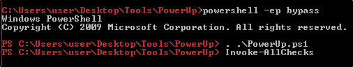

Escalation by Binary Paths
Those escalation path are the most common, in CTF games or labs
To know more about those paths, we can manually check for them
or use tools like
PowerUp:

Here, with a more manual way:
The
SERVICE_CHANGE_CONFIG
means that we can change the configuration!
C:\Users\User\Desktop\Tools\Accesschk\accesschk64.exe -wuvc Everyone *
(Run accesschk64 on the service found)
C:\Users\User\Desktop\Tools\Accesschk\accesschk64.exe -wuvc daclsvc
We can query for the service configuration:
sc qc daclsvc
We have the permission to modify this configuration:
(The space after binPath is important!!!)
Now, we can start the service and see that added "user" into the Administrator group!!
(The error is because we changed the path)